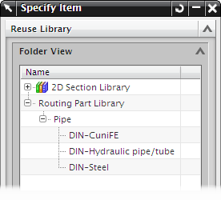

指定项对话框
当您点击指定型材按钮后，就会打开指定项对话框，在此您可以从管线部件库中选择型材以添加到管线路径中。
|
注释
|
指定项对话框比较大，任何时候您都可以取消停靠对话框，或者按 F3 键以临时隐藏对话框，最后再按 F3 键以恢复对话框。
|
文件夹视图
位于重用库组顶部的文件夹视图包含管线部件库的详细列表，这个列表中的可用型材取决于您在管线布置首选项中选择的学科。

搜索子项
搜索子项将打开管线布置重用搜索对话框，让您根据某些特性，比如 NPS 或者材料，来过滤您的搜索。
成员视图
成员视图将列出将列出所有的型材部件族成员，或者如果已经在管线布置重用搜索对话框中进行过滤，那么将只显示那些特性与搜索准则匹配的族成员。

必须/可选特性
可以在把型材放置到管线路径中之前给型材给型材唯一的 IDENTIFIER 特性，具有相同 IDENTIFIER 的型材不能出现在同一个装配中。